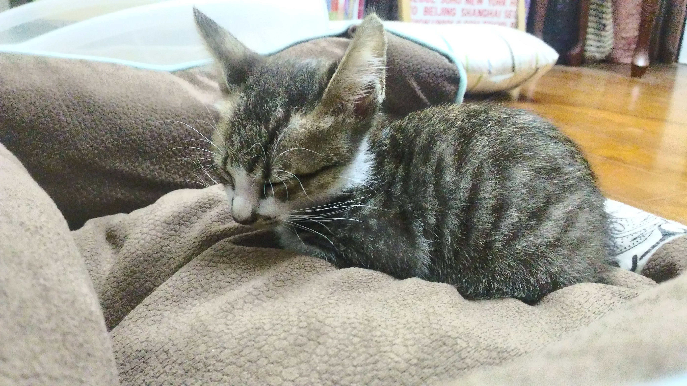
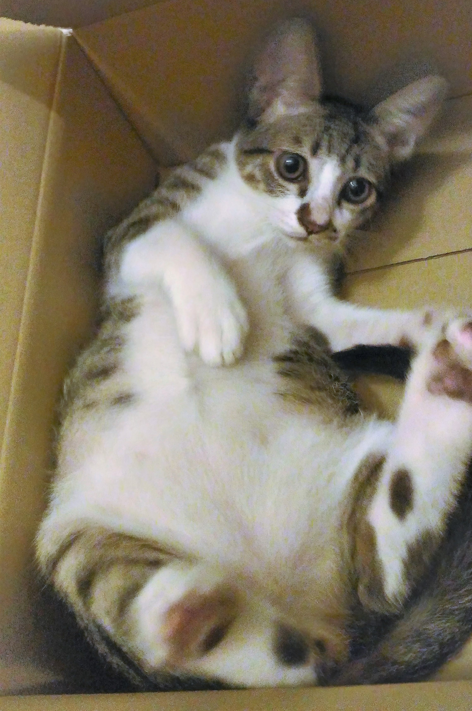
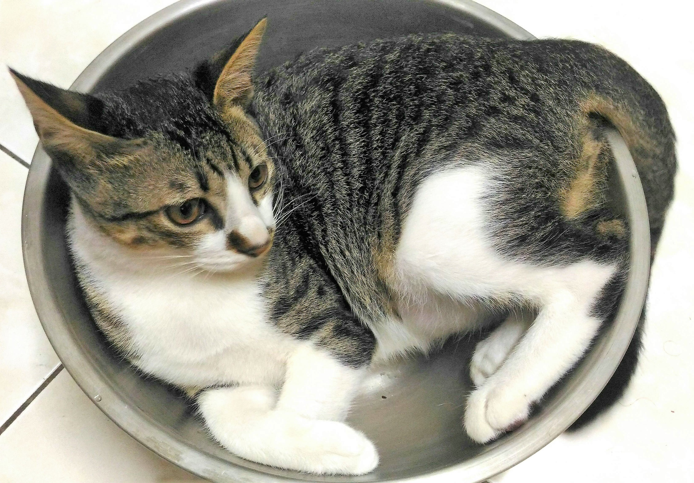
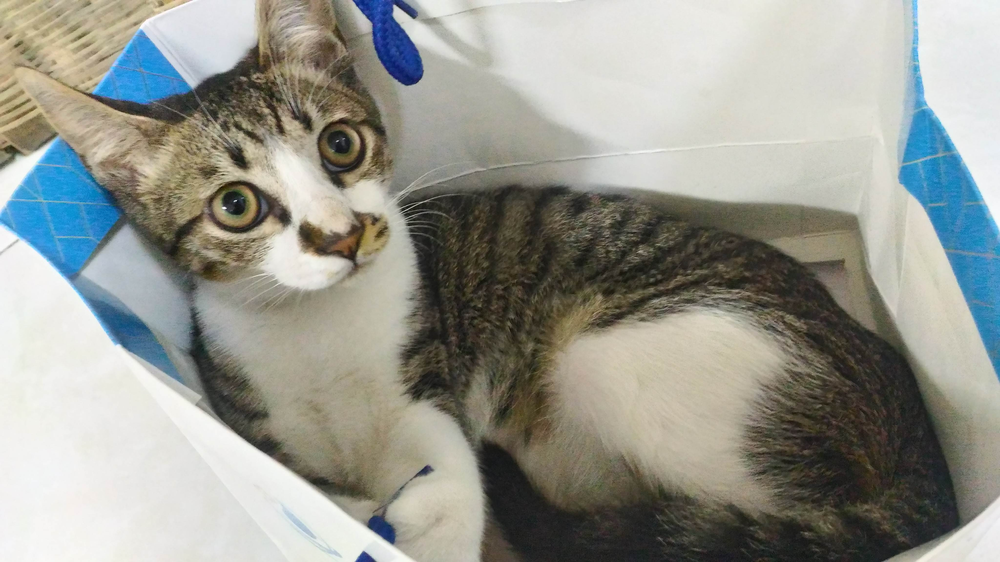
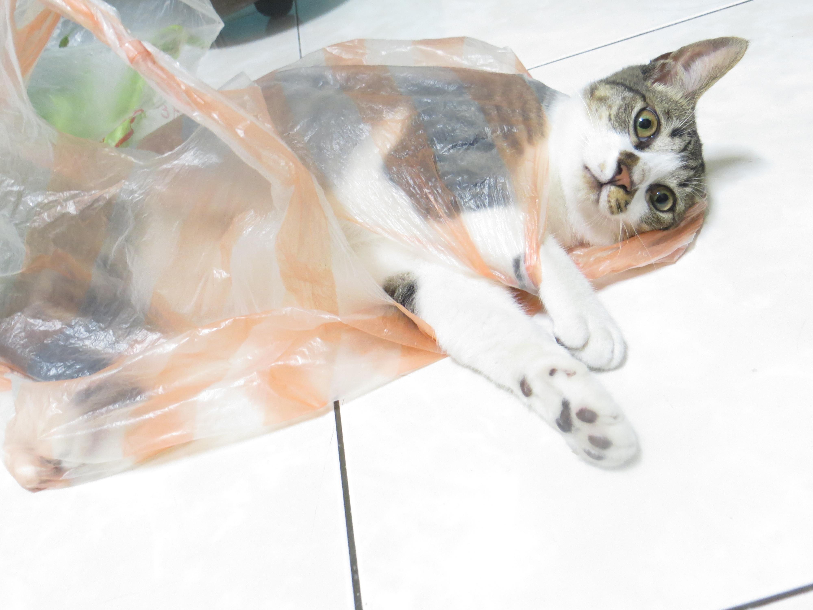
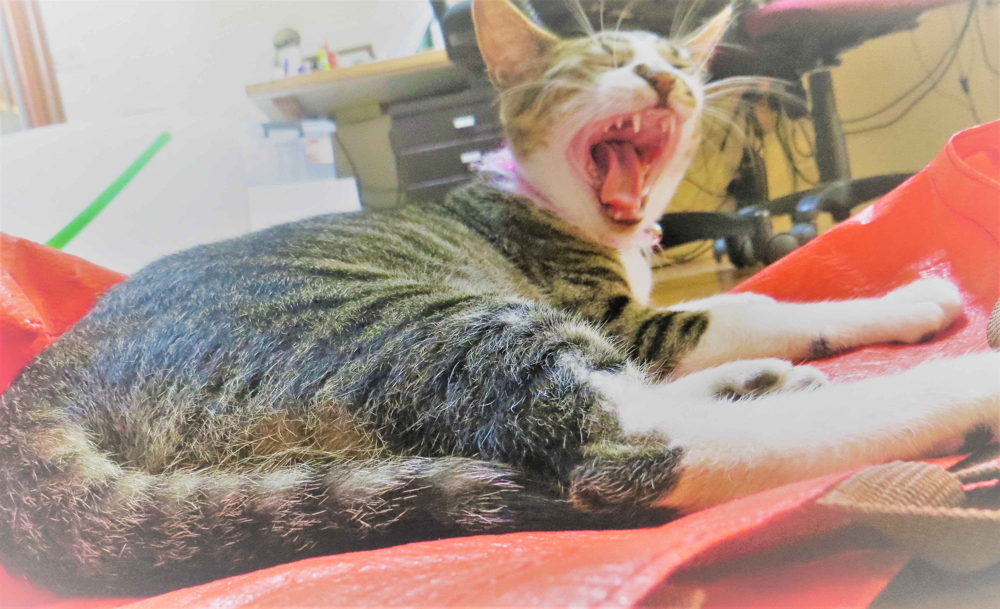
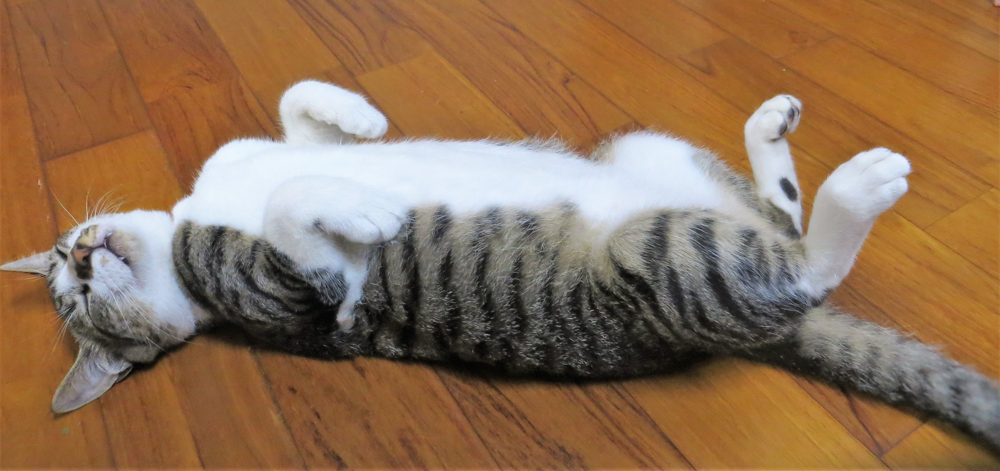
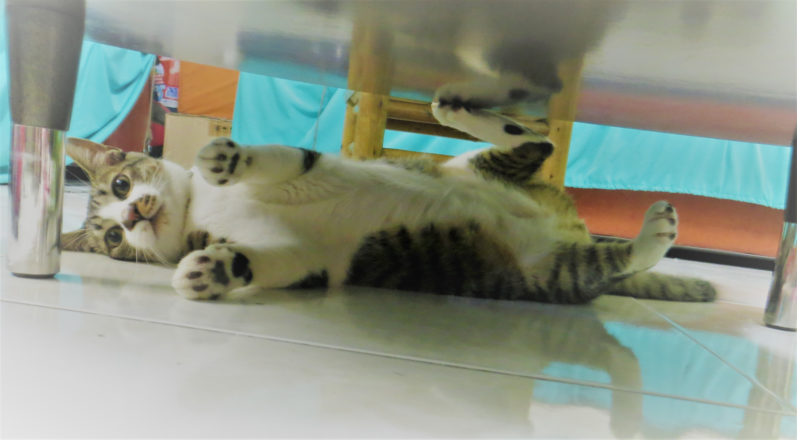
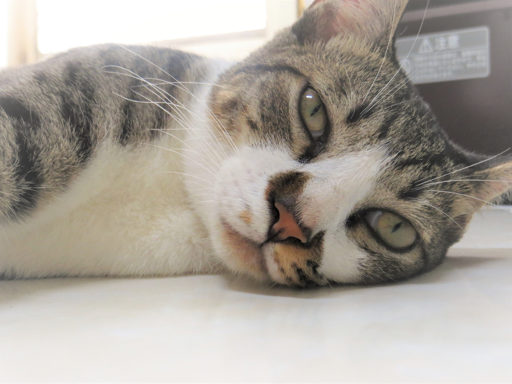
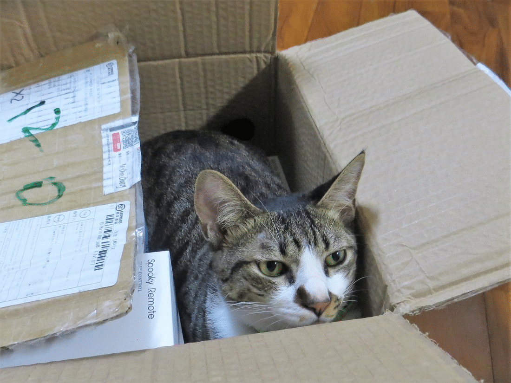

瑤光成長紀錄
某一個風平浪靜的一天，當我正坐在書桌前讀書，突然某個小東西被放到書桌上，等我回過神來發現「竟然有一隻小小貓咪！」又驚又喜地像是飛上了天。原來牠是一隻在鯉魚山流浪的小貓，不知是被馬麻拋棄還是被棄養了......總之，我夢寐以求養一隻貓的夢想終於能實現了！打從心底歡迎牠的到來。
▲ 2018.12.9
剛到來我們家幾天，這隻小小貓漸漸習慣周遭環境，也變得非常黏人，每次睡覺一定要給人抱在懷裡才肯睡著。有一次半夜可能是我房間的門沒關好，在熟睡之際，突然發覺一團毛茸茸的物體圍在我的脖子上，原來是那隻黏人的小小貓想當我的圍巾跑過來窩在這裡熟睡，真讓人捨不得移開這融化人心的小生物。
▲ 2018.12.11
箱子對貓都有一種吸引力，看到了就必定要跳進去躺幾下躺到高興才肯出來。這時伸手進去要摸牠時就要小心了！以為自己是那種文具行經常可以看到的貓咪存錢筒(就是當你放一塊硬幣在指定位置旁，就會被感應而啟動紙箱內部的機器貓咪，伸出貓掌將你的硬幣撥進去。) 只不過這個真實版的貓咪存錢筒可兇猛多了！不管你是拿拖鞋還是硬幣，甚至直接伸手進去都會遭受暴力的貓拳打飛......。
▲ 2019.1.11
貓咪只有在熟睡時最可愛的，其他時候不是暴衝就是亂咬人的腳......。而且熟睡的貓不管幫牠擺什麼動作都可以，是拍照的最好時機，特別是那如天使般的臉龐，一不小心就會像我一樣一拍就是破百張......。
▲ 2019.1.12
很神奇的是牠跟一般的貓不一樣，不知道為什麼青菜對牠有一種吸引力，無論是高麗菜、地瓜葉、小白菜甚至是野菜......，牠都超愛！真不愧是生長在鯉魚山 ── 農夫聚集賣菜的早市市集的貓。當然在餵食以前一定要查清楚貓咪能不能吃。
▲ 2019.3.5
不管是紙袋、
▲ 2019.3.26
塑膠袋、
▲ 2019.4.29
甚至是大潤發購物袋，
▲ 2019.5.10
每一個地方都被牠躺過。
▲ 2019.5.18
貓，真是天底下最會享受的生物，整天只要吃飽飽、睡飽飽，一天比一天變肥肥......。
▲ 2019.5.22
終於，瑤光在我們家也已經待半年了 ! 他注視人的眼神也變得柔和許多，不再像從前「任何獵物都逃不出我的貓爪啦 ! 」充滿殺氣地盯著你。
 ▲ 2019.6.22
待續。